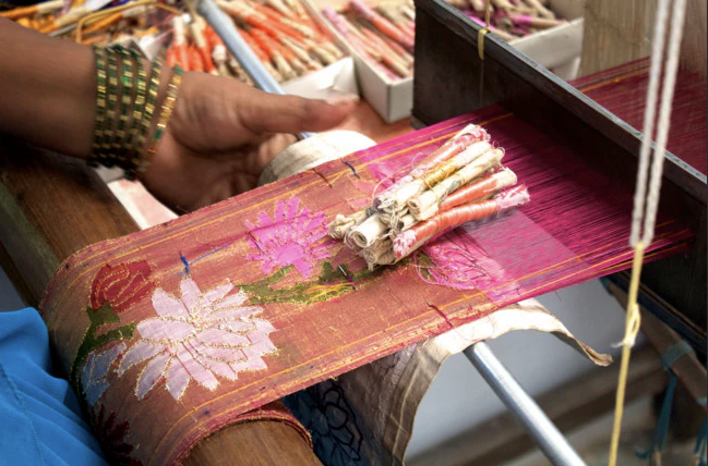

Paithani art feels like royalty woven into fabric. The silk shines, the gold zari glows, and the motifs—especially peacocks and lotuses—seem almost alive. The romance here is elegant and regal. These sarees are often worn during weddings and special occasions, symbolizing beauty, pride, and tradition. It’s not just clothing—it’s a statement of heritage, where every thread carries grace, celebration, and identity.
Paithani originates from the town of Paithan. • Dates back over 2000 years • Flourished during the Satavahana dynasty • Patronized by royalty and wealthy families It was considered a luxury textile, often gifted during marriages and important ceremonies. Even today, Paithani sarees are a symbol of status and tradition in Maharashtra.
Paithani is known for its complex weaving technique: • Handloom Weaving Entire saree is woven manually—no printing • Zari Work (Gold Thread) Real gold or silver threads used for borders and motifs • Tapestry Technique Each motif is woven separately, making it highly detailed • Signature Motifs • Peacock (most famous) • Lotus • Vines and flowers • Rich Silk Fabric Gives a smooth, luxurious finish
Paithani weaving is done by skilled weavers in Maharashtra, often working in families. • Craft passed down through generations • Requires months to complete one saree • Highly labor-intensive and precise This makes each Paithani piece unique and valuable.